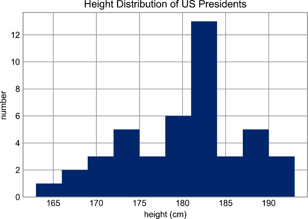
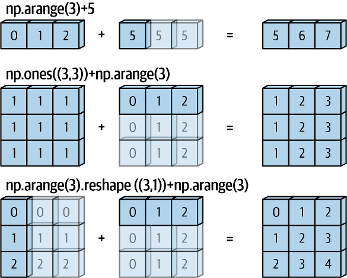
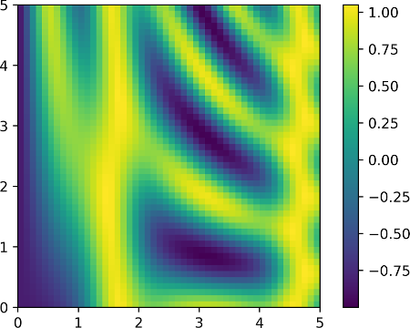
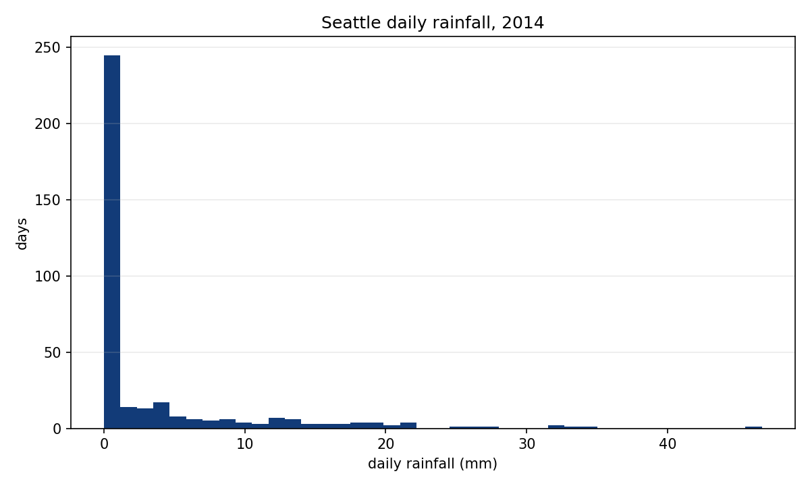
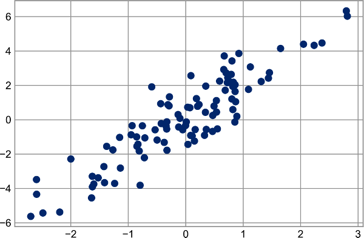
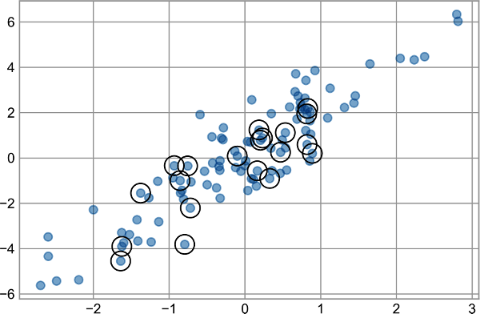
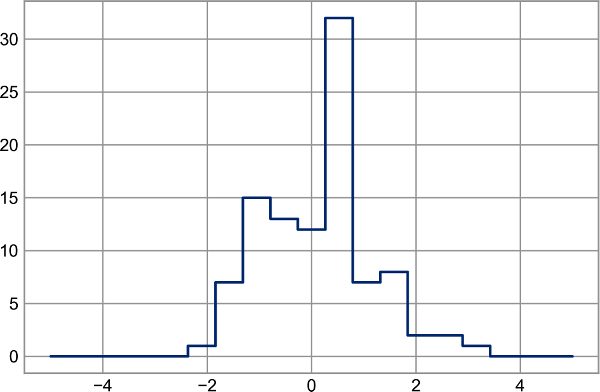
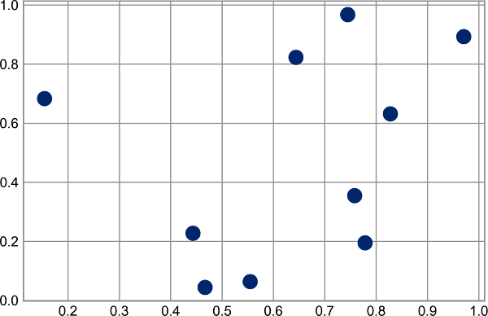
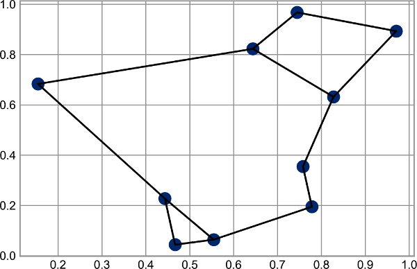

학습 순서
배열 전체 계산과 요약으로 원자료를 비교 가능한 수치로 바꾼다. 브로드캐스팅과 조건 마스크로 서로 다른 배열을 결합하고 필요한 행만 고른다. 팬시 인덱싱·정렬·구조화 배열로 분석용 결과를 만들고 작은 입력으로 검증한다.
DATA VISUALIZATION · WEEK 03
계산·집계·선택·정렬을 그림 입력으로 연결하고 작은 배열로 검증합니다.
배열 전체 계산과 요약으로 원자료를 비교 가능한 수치로 바꾼다. 브로드캐스팅과 조건 마스크로 서로 다른 배열을 결합하고 필요한 행만 고른다. 팬시 인덱싱·정렬·구조화 배열로 분석용 결과를 만들고 작은 입력으로 검증한다.
반복문을 배열 연산으로 바꾸고 axis와 shape를 근거로 결과 모양을 예측한다. 전처리 전후의 원소 수·선택 조건·정렬 순서·핵심 요약값을 코드로 검산한다.
02 · NUMPY
assert로 비교한다.원자료 → 검사 → 변환 → 요약 → 조건 선택 → 정렬 → 그림 입력
↑______________________________________↓
검증03 · NUMPY
np.add처럼 배열의 각 원소에 같은 계산을 적용해 원소별 결과를 만드는 NumPy 함수이다.np.equal은 정확 비교를 원소마다 수행하고, np.isclose는 허용 오차 비교를 원소마다 수행하며, np.allclose는 모든 허용 오차 판정을 불리언 하나로 묶는다.repr은 representation(표현)의 약자이다. repr(value)는 값을 다시 읽어도 같은 값이 되도록 개발자용 표현을 반환하므로, 지정한 자릿수로 반올림하는 서식 출력과 달리 미세한 차이를 숨기지 않는다.=는 값을 이름에 저장하는 대입이므로 비교 결과가 없다. ==와 np.equal은 허용 오차 없이 수치가 같은지 비교하므로 0.1+0.2와 0.3을 False로 판정한다.np.isclose(a, b)는 각 원소가 |a-b| ≤ atol + rtol×|b|인지 판정하고, np.allclose는 그 결과가 모두 참인지 답한다.0.30000000000000004는 통과하지만 실제 차이가 큰 0.31은 통과하지 않는다.import numpy as np
values = np.array([1, 2, 3])
print(np.add(values, 10)) # ufunc 결과 → [11 12 13]
actual = np.array([0.1 + 0.2]) # 계산값 → [0.30000000000000004]
expected = np.array([0.3]) # 기대값 → [0.3]
print(f"{actual[0]:.1f}") # 소수 첫째 자리 표시 → 0.3
print(repr(actual[0]))
# repr 출력 → 0.30000000000000004
print(np.equal(actual, expected)) # 정확 비교 → [False]
print(np.isclose(actual, expected)) # 허용 오차 비교 → [ True]
print(np.allclose(actual, expected)) # 전체 판정 → True
bad = np.array([0.31])
print(np.allclose(bad, expected)) # 큰 차이의 반례 → False04 · NUMPY
np.abs(x)처럼 배열 하나를 받아 각 원소의 결과를 만든다.np.add(x, y)처럼 두 입력의 대응 원소를 계산한다./는 실수 결과를 만들 수 있으므로 연산 뒤 dtype을 다시 확인한다.| 목적 | 연산자 | ufunc |
|---|---|---|
| 덧셈 | x + y | np.add(x, y) |
| 곱셈 | x * y | np.multiply(x, y) |
| 거듭제곱 | x ** y | np.power(x, y) |
| 나머지 | x % y | np.mod(x, y) |
05 · NUMPY
axis를 생략하면 전체 값을 하나로 줄이고, axis=1이면 각 행을 하나의 결과로 줄인다.np.isclose(a, b)는 allclose와 같은 허용 오차 규칙을 각 대응 원소에 적용하므로 배열 입력에는 불리언 배열을, 스칼라 입력에는 불리언 하나를 반환한다.isclose는 어느 원소가 실패했는지 보여 주고, allclose는 그 원소별 판정을 모두 묶어 전체 통과 여부 하나를 답한다.import numpy as np
scores = np.array([[70, 80, 90],
[60, 75, 95]]) # 입력 → shape (2, 3)
overall_mean = scores.mean() # 전체 평균 → 78.333...
row_max = scores.max(axis=1) # 행별 최댓값 → [90 95]
print(overall_mean, row_max) # 출력 → 78.333... [90 95]
checks = np.isclose([overall_mean, row_max[0]],
[470 / 6, 90]) # 원소별 판정 → [ True True]
whole = np.allclose([overall_mean, row_max[0]],
[470 / 6, 90]) # 전체 판정 → True
print(checks, whole) # 출력 → [ True True] True06 · NUMPY
axis=0은 행 방향으로 값을 모아 각 열의 결과를 남긴다.axis=1은 열 방향으로 값을 모아 각 행의 결과를 남긴다.(2, 3) 배열에서 axis=0 집계 결과의 shape는 (3,)이다.(2, 3) 배열에서 axis=1 집계 결과의 shape는 (2,)이다.[[1, 2, 3], axis=0 합 → [5, 7, 9] [4, 5, 6]] axis=1 합 → [6, 15]
07 · NUMPY
np.nanmean은 NaN을 제외한 값의 평균을 계산한다.np.nanmean의 결과와 함께 제외한 NaN 개수를 기록해야 표본 수의 변화를 알 수 있다.values = np.array([10.0, np.nan, 20.0]) normal_mean = np.mean(values) # NaN 포함 평균 → nan valid_mean = np.nanmean(values) # NaN 제외 평균 → 15.0 missing = np.isnan(values).sum() # 제외한 NaN 수 → 1 print(normal_mean, valid_mean, missing) # 출력 → nan 15.0 1

08 · NUMPY
09 · NUMPY

10 · NUMPY
(3,) 배열과 스칼라가 계산되어 (3,) 결과를 만드는 경우이다.(3, 3) 배열의 각 행에 (3,) 배열을 같은 순서로 더하는 경우이다.(3, 1) 열 배열과 (3,) 행 배열이 만나 (3, 3) 결과를 만드는 경우이다.shape를 오른쪽 끝 차원부터 비교한다.11 · NUMPY
X의 각 행은 관측 하나이고 각 열은 서로 다른 측정 변수이다.X.mean(axis=0)을 빼면 각 열의 평균이 0인 X_centered를 만든다.(2,)인 열 평균은 (3, 2)의 각 행에서 반복해 뺀 것처럼 계산된다.import numpy as np # 배열과 평균 함수를 사용한다.
X = np.array([[1., 10.],
[3., 14.],
[5., 18.]]) # 행=관측, 열=변수인 입력을 만든다.
column_mean = X.mean(axis=0) # 열 평균 → [ 3. 14.]
X_centered = X - column_mean # 중심 이동 → [[-2,-4],[0,0],[2,4]]
print(column_mean) # 출력 → [ 3. 14.]
print(X_centered) # 출력 → [[-2. -4.],[0. 0.],[2. 4.]]
print(X_centered.mean(axis=0)) # 이동 뒤 열 평균 → [0. 0.]
12 · NUMPY
np.linspace(start, stop, num)은 시작값과 끝값을 포함해 같은 간격의 값 num개를 만든다. 따라서 간격은 (stop-start)/(num-1)이다.np.linspace(0, 5, 6)의 결과는 [0., 1., 2., 3., 4., 5.]이고, 값 6개 사이의 간격은 5/(6-1)=1이다.np.newaxis는 (2,)인 y에 열 축을 추가해 (2, 1)로 바꾸며, 이 열 배열과 (6,)인 x를 계산하면 (2, 6) 격자가 된다.y=0, 둘째 행은 y=10일 때의 여섯 x 결과이며, 행은 y 위치이고 열은 x 위치이다.z 값을 색으로 표시한 확장 사례이다.x = np.linspace(0, 5, 6)
print(x) # → [0. 1. 2. 3. 4. 5.]
y = np.array([0., 10.])[:, np.newaxis]
print(y) # → [[ 0.], [10.]]
z = x + y # 각 y와 모든 x를 더한다.
print(z) # → [[0.,1.,2.,3.,4.,5.],
# [10.,11.,12.,13.,14.,15.]]
print(z.shape) # → (2, 6)13 · NUMPY
True, 만족하지 않으면 False인 불리언 배열을 만든다.shape는 비교한 원본 배열의 shape와 같다.np.sum(condition)은 True를 1로 세어 조건을 만족한 원소 수를 계산한다.np.any는 하나라도 참인지 확인하고 np.all은 모든 원소가 참인지 확인한다.rain = np.array([0, 12, 3, 25, 8]) heavy = rain >= 10 # 원소별 비교 → [F,T,F,T,F] count = np.sum(heavy) # True를 1로 센 개수 → 2 print(heavy, count) # 출력 → [False True False True False] 2
14 · NUMPY
&, OR에 |, NOT에 ~를 사용한다.rain[moderate]는 원본에서 마스크가 True인 위치의 값만 1차원 배열로 반환한다.np.sum(moderate)와 같아야 한다.rain = np.array([0, 12, 3, 25, 8]) moderate = (rain > 5) & (rain < 20) # 조건 결과 → [F,T,F,F,T] selected = rain[moderate] # True 위치 선택 → [12 8] print(moderate) # 출력 → [False True False False True] print(selected) # 출력 → [12 8]

15 · NUMPY
rainfall_mm > 0 마스크의 참 개수는 비가 관측된 날의 수이다.rainfall_mm[rainfall_mm > 0].mean()은 비가 관측된 날만 선택한 평균 강수량이다.16 · NUMPY
x = np.array([10, 20, 30, 40, 50]) index = np.array([[3, 1], [4, 0]]) # 읽을 위치 → shape (2, 2) selected = x[index] # 위치 대응 → 3→40, 1→20, 4→50, 0→10 print(selected) # 출력 → [[40 20], [50 10]] print(selected.shape) # 출력 shape → (2, 2)

17 · NUMPY
X의 shape가 (100, 2)이면 산점도에는 100개 점이 있어야 한다.
18 · NUMPY
19 · NUMPY
index=[2,2,3]은 2번 위치를 두 번, 3번 위치를 한 번 가리킨다.[0,0,0]을 [1,1,1]로 만든 뒤 되쓰므로 2번 위치에 같은 값 1을 두 번 덮어써 한 번만 증가한 것처럼 남는다.[2,2,3]이면 2번 구간에 관측 두 개, 3번 구간에 관측 한 개가 있으므로 빈도는 [0,0,2,1,0]이어야 한다.np.add.at은 인덱스를 하나씩 방문한 것처럼 0→1→2를 보존하므로 입력 관측 수 3과 빈도 합 3이 같아진다.index = np.array([2, 2, 3]) # 방문 위치 → 2번, 2번, 3번 bad = np.zeros(5, dtype=int) # 시작값 → [0 0 0 0 0] bad[index] += 1 # 중복을 한 번만 반영 → [0 0 1 1 0] good = np.zeros(5, dtype=int) # 시작값 → [0 0 0 0 0] np.add.at(good, index, 1) # 방문마다 누적 → [0 0 2 1 0] print(bad) # 출력: [0 0 1 1 0] — 2번 위치의 한 건이 사라짐 print(good) # 출력: [0 0 2 1 0] — 2번 위치에 두 건이 누적됨 assert bad.sum() == 2 and good.sum() == 3

20 · NUMPY
np.searchsorted(bins, x)는 정렬된 경계 bins에 각 관측값을 끼워 넣을 위치, 즉 관측이 들어갈 구간 번호를 반환한다.np.add.at(counts, index, 1)은 각 구간 번호가 나타날 때마다 그 구간의 빈도를 1씩 더한다.counts.sum()은 모든 구간의 빈도를 더한 값이며, 위 결과 4는 입력 관측값 네 개가 하나도 빠지지 않았다는 뜻이다.0.2→0번, 0.7→1번처럼 대표값의 구간 번호를 손으로 대조해 경계 포함 방향도 확인한다.x = np.array([0.2, 0.7, 1.4, 1.8]) # 관측값 4개 bins = np.array([0.5, 1.0, 1.5, 2.0]) # 경계값 4개 index = np.searchsorted(bins, x) # 구간 번호 → [0 1 2 3] counts = np.zeros(len(bins) + 1, dtype=int) # 시작 빈도 → [0 0 0 0 0] np.add.at(counts, index, 1) # 구간별 누적 → [1 1 1 1 0] print(counts.sum()) # 빈도 합 → 4
21 · NUMPY
np.sort(x)는 정렬된 복사본을 반환하고 x.sort()는 원본 배열의 순서를 바꾼다.np.argsort(x)는 값을 작은 순서로 읽을 수 있는 원본 인덱스를 반환한다.sort를 사용하고 다른 열도 같은 순서로 재배열해야 하면 argsort를 사용한다.x = np.array([40, 10, 30, 20]) order = np.argsort(x) print(order) # 원본 인덱스 순서 → [1 3 2 0] print(x[order]) # 그 순서로 읽은 값 → [10 20 30 40]
22 · NUMPY
[2,80]과 [3,90]이 생긴다.[2,90]은 ID 2와 점수 90의 한 관측이므로, 두 값이 정렬 뒤에도 함께 이동해야 행 관계가 보존된다.X[:, 1]은 점수 열이고 argsort는 점수가 작은 행의 원본 위치 [1,2,0]을 반환한다.X[order]는 같은 순서를 모든 열에 적용하므로 [2,90] 같은 ID-점수 한 쌍이 깨지지 않는다.X = np.array([[2, 90], [1, 70], [3, 80]]) # 원본 ID-점수 세 쌍 column_sorted = np.sort(X, axis=0) # → [[1,70],[2,80],[3,90]] # 위 결과에는 원본에 없던 [2,80]과 [3,90]이 생긴다. order = np.argsort(X[:, 1]) # 점수순 원본 위치 → [1 2 0] row_sorted = X[order] # → [[1,70],[3,80],[2,90]] # 원본 행을 통째로 옮겨 ID-점수 쌍이 유지된다.
23 · NUMPY
np.partition(x, 3)[:3]은 가장 작은 값 세 개를 왼쪽에 모으지만, 예제 출력 [2,1,3]처럼 그 세 값 자체를 정렬하지는 않는다.np.argpartition(x, 3)은 값이 아니라 원본 위치를 반환하며, x[order]로 읽으면 partitioned와 같은 분할 결과가 된다.partitioned[:3]을 사용하고, 순위도 필요하면 np.sort(partitioned[:3])로 [1,2,3]을 만든다.argpartition을 사용한다.x = np.array([7, 2, 3, 1, 6, 5, 4]) # 원본 값과 위치
partitioned = np.partition(x, 3) # 값 분할 → [2 1 3 | 4 6 5 7]
order = np.argpartition(x, 3) # 위치 분할 → [1 3 2 | 6 4 5 0]
print(partitioned[:3], partitioned[3:]) # 출력: [2 1 3] [4 6 5 7]
print(order[:3], order[3:]) # 출력: [1 3 2] [6 4 5 0] — 원본 인덱스
print(x[order]) # 출력: [2 1 3 4 6 5 7]
assert set(partitioned[:3]) == {1, 2, 3}
assert np.array_equal(x[order], partitioned)
24 · NUMPY
(10, 2) 배열은 각 행이 평면 위 점 하나이고 두 열이 두 좌표이다.
25 · NUMPY
(0,0), B=(3,0), C=(0,4)의 거리는 3-4-5 삼각형이므로 손으로도 A-B=3, A-C=4, B-C=5를 확인할 수 있다.points[:,None,:] - points[None,:,:]는 모든 점 쌍의 좌표 차이를 만들고 마지막 축의 제곱합과 제곱근이 거리 배열을 만든다.points = np.array([[0, 0], [3, 0], [0, 4]]) # A, B, C 좌표 difference = points[:, None, :] - points[None, :, :] # 모든 점 쌍의 차이 distance = np.sqrt(np.sum(difference ** 2, axis=-1)) # 3×3 거리 배열 # distance 출력: [[0., 3., 4.], # [3., 0., 5.], # [4., 5., 0.]] search = distance.copy() np.fill_diagonal(search, np.inf) # 자기 자신은 후보에서 제외한다. nearest = np.argpartition(search, 0, axis=1)[:, 0] print(nearest) # 출력: [1 0 0] = A→B, B→A, C→A
26 · NUMPY
dtype을 저장하는 NumPy 배열이다.dtype=[('name','U10'), ('age','i4'), ('weight','f8')]에서 바깥 대괄호는 필드 목록이고 쉼표는 세 필드 정의를 구분한다.('Alice', 25, 55.0)은 한 사람의 세 필드 값이며 dtype 목록의 필드 순서와 일대일로 대응한다.people['age'] < 30으로 행을 고른 뒤 name을 읽어도 같은 행의 Alice가 남으므로 이름·나이·몸무게의 관계가 유지된다.people = np.array([
('Alice', 25, 55.0),
('Bob', 45, 85.5)
], dtype=[
('name', 'U10'), # 필드 이름 name, 최대 10글자 유니코드 문자열
('age', 'i4'), # 필드 이름 age, 4바이트 정수
('weight', 'f8') # 필드 이름 weight, 8바이트 실수
])
print(people.dtype.names) # 출력: ('name', 'age', 'weight')
print(people['age']) # 출력: [25 45]
young = people[people['age'] < 30]
print(young['name']) # 출력: ['Alice']27 · SIX CHECKS TO KEEP
axis를 줄여 요약값을 만든다.np.add.at을 사용한다.argsort는 정렬 순서를 보존하고 argpartition은 전체 정렬 없이 상위값이나 하위값을 고른다.shape·원소 수·선택 조건·핵심 값과 차트 요소 수를 검증한다.